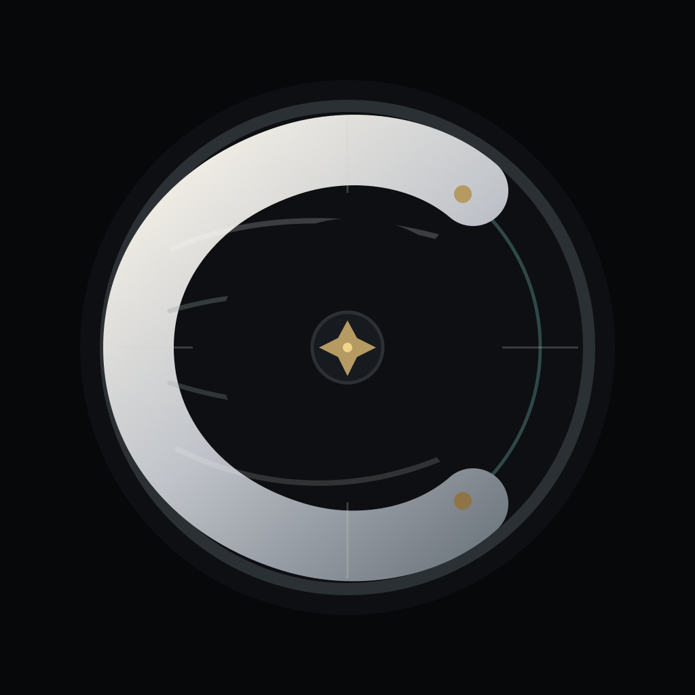
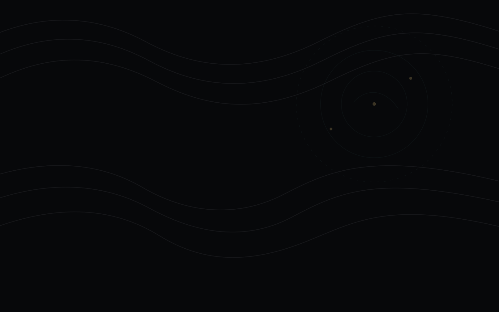

Alpha App Icon
Locked Candidate B rendered into the app icon set and flattened for iOS.
Phone-friendly visual review for the 2026-05-27 Cartenza surface pass. This gallery reflects the locked Candidate B logo direction and current SwiftUI copy; it is not a simulator screenshot.

Locked Candidate B rendered into the app icon set and flattened for iOS.
Selected Candidate B direction for Alpha runtime wiring.
Directional typography only. Final vector cleanup still belongs with design.

Secondary motif for restrained Atlas atmosphere.
Before Survey or evidence capture, accept the Alpha privacy and terms acknowledgement.
Private Alpha
Connect Apple Music and answer a short Survey. Cartenza will build your starter Atlas and generate your first listening missions.
Artists, albums, and songs create evidence for the first mission batch.
Missions are tests, not comfort playlists. A clear miss can improve the map.
This mission tests whether a provisional Survey signal is a real region or a false-nearby road.
Adjust reactions, tags, and notes after listening. Exports remain ingestion candidates.